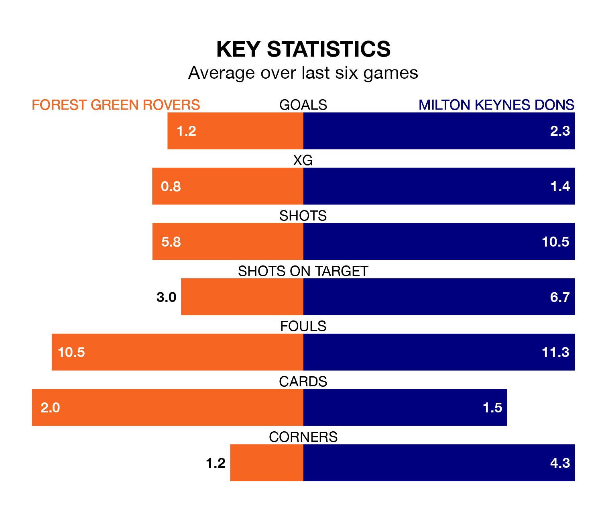

Struggling Forest Green Rovers face Milton Keynes Dons at the Bolt New Lawn on Saturday looking to build on a win in their last league outing.
After securing all three points with a 3-0 victory over Crewe Alexandra on Monday, the Green sit bottom of EFL League Two.
They travel to play a Milton Keynes side fourth in the standings, who were held in their last match, 3-3 against Notts County.
With 41 goals in 41 games so far this season, Forest Green are the league's second-lowest scorers with 1.0 goals per game. And they are conceding more than average, letting in 68 goals at a rate of 1.7 per game.
Milton Keynes, meanwhile, are above average scorers, with 1.7 goals per game, compared to a league average of 1.5. They have conceded 1.4 goals per game.
In the last 10 years, Forest Green and Milton Keynes have played each other on six occasions. Milton Keynes won five of them and they drew once.
On average, the Green scored 0.5 goals and the Dons 1.5 in those matches.
Their last meeting was on December 16, when Milton Keynes won 2-0 at home.
Dons' Alex Gilbey is among the league's most creative players, racking up 10 assists in 42 appearances so far this season, and holding second spot in EFL League Two's assist charts.
For Rovers, Kyle McAllister has set up the most goals, having laid on six assists in 39 games.
The Green are in mixed form in EFL League Two, with three wins and three losses from their last six games.
With three wins and a draw over that period, the Dons' form is slightly better – they have taken 10 points from 18, compared to the hosts' nine.
Saturday's match will be refereed by Andy Davies, who has taken charge of four EFL League Two games so far this season, issuing no red cards and booking 18 players. He has not awarded any penalties.
He is yet to oversee a match featuring either Forest Green or Milton Keynes this season.
Updated: 16:41 (UTC), 04/04/24